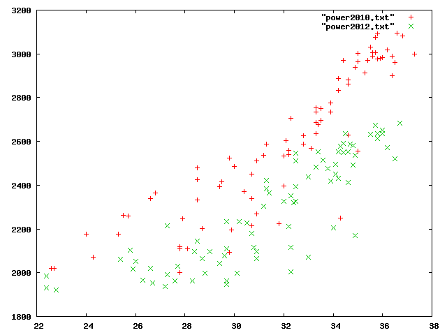
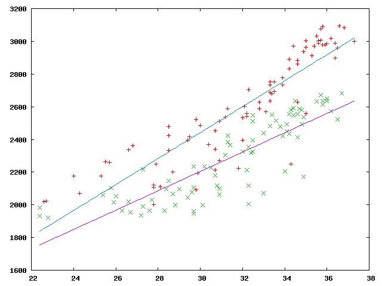
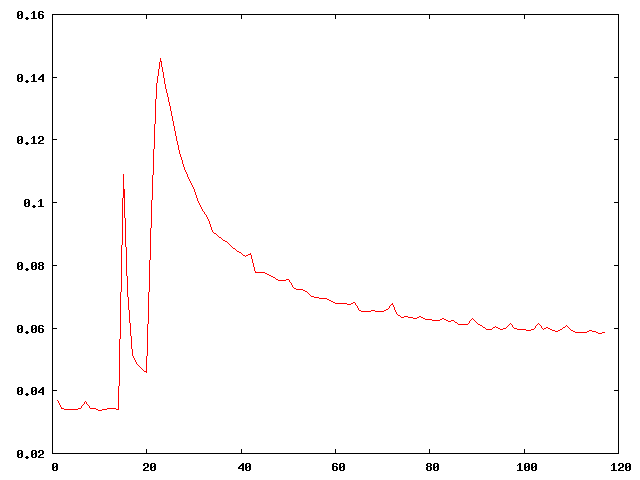
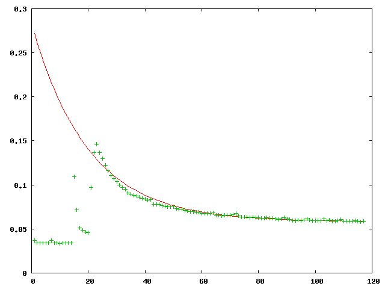

ターミナルで gnuplot と入力せよ。

上のデータに対して、最小二乗法による近似一次式を求めるプログラムを作成せよ。

発展問題 (余裕のある人だけやること)
以下は、東京都健康安全研究センターによる都内の環境放射線測定結果である。(測定場所：東京都新宿区百人町)
http://monitoring.tokyo-eiken.go.jp/mp_shinjuku_air_data_1day_2011.html
横軸を測定日、縦軸を放射線の線量率 (単位 毎時マイクログレイ) とすると、グラフは以下のようになる。
グラフを見ると、2011年3月15日と3月23日に鋭いピークがあるが、これらは福島第一原子力発電所事故に伴う放射性物質の排出が原因である。3月23日目以降、放射線の線量率は低下していっているが、これは半減期8日であるヨウ素131が崩壊していっているためだと考えられている。